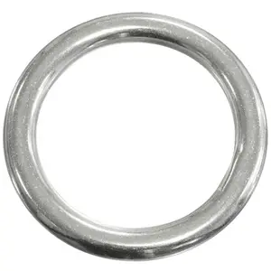

ⲣⲁⲙⲡⲉⲓ, -ⲡⲓ, ⲣⲁⲛⲡⲓ S nn as pl, ring: Ex 25 12 ⲣⲁⲙ. (P 44 104, B ϣϭⲟⲩⲣ), ib 26 29 ⲣⲁⲛ. δακτύλιος, ShIF 182 ϩⲉⲛⲟⲩⲁϩ…ⲉⲩⲟϥⲧ ⲉϩⲟⲩⲛ ⲉϩⲉⲛⲣⲁⲙ

ⲣⲁⲙⲡⲉⲓ, -ⲡⲓ, ⲣⲁⲛⲡⲓ S nn as pl, ring: Ex 25 12 ⲣⲁⲙ. (P 44 104, B ϣϭⲟⲩⲣ), ib 26 29 ⲣⲁⲛ. δακτύλιος, ShIF 182 ϩⲉⲛⲟⲩⲁϩ…ⲉⲩⲟϥⲧ ⲉϩⲟⲩⲛ ⲉϩⲉⲛⲣⲁⲙ
| view | ϩⲁⲗⲁⲕ SB ϩⲁⲗⲉⲕ SfF ϩⲁⲗⲏⲕ S ⲁⲗⲁⲕ SB | (noun feminine) ring [ξαλις, ξελλιον, κρικος]2152 |
| view | ⲝⲟⲩⲣ, ⲕⲥⲟⲩⲣ, ϭⲥⲟⲩⲣ S ϣϭⲟⲩⲣ B | (noun masculine) finger-ring [δακτυλιος]
as key [δακτυλοκλειδιον] other rings870 |
| view | ⲗⲟⲟⲩ, ⲗⲟⲟⲩⲉ S ⲗⲱⲟⲩ SB ⲗⲁⲁⲩ, ⲗⲁⲩ S ⲗⲁⲩ BF | (noun masculine) curl of hair [σειρα, βοστρυχος]
ring, link in chain fringe (tasselled ?) bunch, cluster of dates1007 |
| view | ⲁⲣⲁ B | (noun masculine) door-ring2684 |
| view |
|
|
||||||||||||||||||||||||